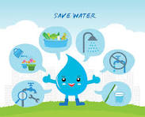

Causas
Las principales causas que han dado lugar a la escasez de agua son:
La destrucción de fuentes naturales de agua: estas se han llevado a cabo mediante la sobreexplotación de ríos y de reservas de aguas subterráneas.
Una mayor demanda: el masivo crecimiento poblacional, industrial y agrario ha hecho que la demanda de agua subiera drásticamente.
Los patrones de consumo: pues estos generan grandes desequilibrios al no permitir que el agua disponible se renueve.
El cambio climático: el gran responsable de las peores épocas de sequías es el cambio climático, un gran problema que hemos causado entre toda la sociedad.
Mala distribución: una de las principales causas de la escasez de agua es la distribución no equitativa del agua dulce en el mundo.
Agua contaminada: cabe destacar la contaminación del agua de ríos, arroyos, lagos y lagunas debido al vertimiento de diferentes residuos tóxicos. Entre dichos residuos encontramos los que provienen de desechos industriales y domésticos y aquellos derivados de campos de cultivos en los que se han usado agroquímicos. Si te interesa conocer más información, no te pierdas este artículo sobre Soluciones a la contaminación del agua.
La extracción insostenible del agua de fuentes, ríos y lagos: dicha extracción impide que el agua siga su ciclo como recurso renovable. Esto se debe a que, generalmente, el agua se extrae mucho más rápido de lo que tarda en renovarse.
La urbanización masiva: la última gran causa es la urbanización, pues esta se concentra en poblaciones con índices demográficos crecientes. No podemos olvidar tampoco el éxodo campo-ciudades, pues este conlleva un nivel de vida más alto y, por consiguiente, un mayor uso del agua.
Consecuencias
Conflictos entre estados a nivel mundial
Situaciones de estrés hídrico en la población debido al déficit de recursos disponibles. Si quieres aprender más sobre este grave problema, no te pierdas este artículo de EcologíaVerde sobre Estrés hídrico: agua en peligro.
Dificultades en la población para proveerse de agua con la calidad y en las cantidades necesarias.
La poca conciencia sobre la problemática de la escasez de agua da lugar a perjuicios sobre el mantenimiento de la cantidad y calidad del agua disponible, así como a establecer una distribución equitativa para su consumo. Para poner remedio a este conflicto, échale un vistazo a este otro artículo sobe Por qué es importante cuidar el agua.
Riesgos en la salud al consumir agua que no ha recibido un correcto tratamiento y que ha sido sometida a estancamientos y proliferaciones de insectos, roedores y otros animales portadores de enfermedades infecciosas.
10 estándares que posibiliten el seguimiento del desarrollo del proyecto.
1-Consumo de agua : Este estándar permite monitorear la cantidad de agua utilizada por cada persona en la comunidad, lo que ayuda a evaluar la eficiencia en el uso del recurso.
2-Porcentaje de acceso a agua potable: Este estándar mide el porcentaje de la población que tiene acceso a fuentes de agua potable seguras y limpias, lo que refleja el impacto del proyecto en la mejora de la calidad del agua.
3-Reducción de pérdidas en sistemas de distribución: Este estándar evalúa la eficiencia de los sistemas de distribución de agua al medir la reducción de pérdidas por fugas o desperdicio en las tuberías y redes de distribución.
4-Calidad del agua según estándares sanitarios: Este estándar establece los parámetros de calidad del agua potable, como la presencia de contaminantes o la concentración de ciertos elementos, para garantizar su seguridad y potabilidad
5-Tasa de adopción de prácticas de conservación del agua: Este estándar mide la tasa de adopción de prácticas de conservación del agua, como la recolección de agua de lluvia, el reúso de aguas grises o la instalación de dispositivos de bajo consumo.
6-Eficiencia en el uso de recursos financieros: Este estándar evalúa la eficiencia en el uso de los recursos financieros asignados al proyecto, comparando los costos reales con el presupuesto planificado y analizando cualquier desviación significativa.
7-Cobertura mediática y alcance de campañas de concienciación: Este estándar mide la cobertura mediática y el alcance de las campañas de concienciación sobre la escasez del agua, evaluando la cantidad de personas alcanzadas y el impacto generado.
8-Participación comunitaria: Este estándar evalúa el nivel de participación de la comunidad en actividades relacionadas con el proyecto, como talleres, reuniones informativas o programas de capacitación, para medir el grado de involucramiento y compromiso.
9-Índice de satisfacción del usuario: Este estándar mide la satisfacción de los usuarios finales con respecto a los servicios relacionados con el agua, como la calidad del suministro, la disponibilidad y la accesibilidad, a través de encuestas o evaluaciones periódicas.
10-Cumplimiento de regulaciones y normativas: Este estándar evalúa el grado en que el proyecto cumple con las regulaciones y normativas locales, nacionales e internacionales relacionadas con el uso y la gestión del agua, garantizando su legalidad y sostenibilidad a largo plazo.
Recursos Humanos
La gestión de los recursos humanos del proyecto incluye los procesos que organizan, gestionan y conducen al equipo del proyecto, que está compuesto por las personas a las que se han asignado roles y responsabilidades para completar el proyecto. Los recursos humanos que necesitaremos son personas voluntarias que quieran ayudarnos con el proyecto, también participará parte de mi familia y amigos.

Recursos Materiales
Los recursos materiales se refieren a todo lo que el equipo del proyecto va a necesitar para llevar a cabo el proyecto: las salas, los equipos informáticos, los programas, etc. Siempre es necesario definir lo siguiente: lo que la empresa ya posee y lo que puede poner a disposición de tu equipo. Los recursos materiales y tecnológicos que necesitaremos serán cartulinas, plumones, computadoras, módem.
Recursos Financieros
Tienen que ver con el flujo de inversión y financiación, lo que se considera como determinante para poder cubrir con la asignación de recursos humanos y materiales. Se concentra en el presupuesto, que contiene los costos y los gastos que se han planificado para el cumplimiento del proyecto. Los recursos financieros que se utilizarán serán para pagar el lugar donde se pondrá la campaña y para comprar todo el material que será utilizado.